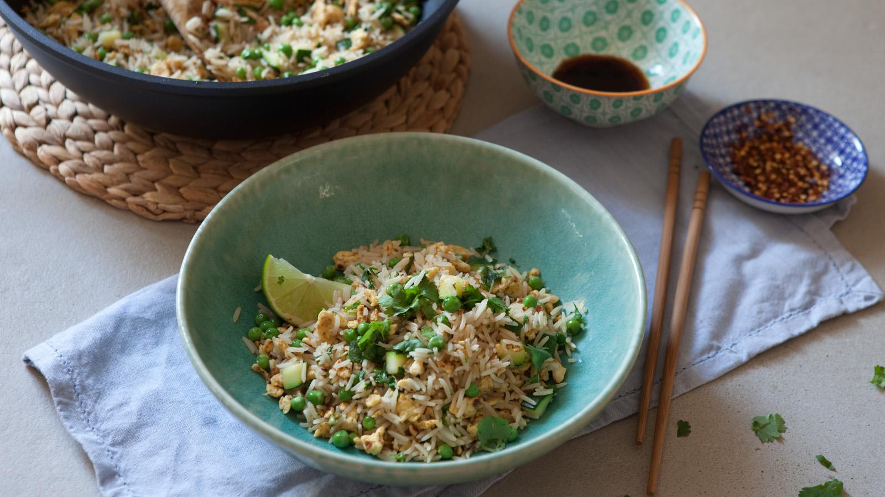

Egg fried rice

Get a taste of the takeaway at a fraction of the cost with this recipe for tasty egg-fried rice with veggies. This is designed to be a low cost recipe.
Source
Ingredients
- 500g/1lb 2oz cooked rice (preferably one-day old) or 200g/7oz rice
- 2 tbsp oil
- 4 eggs, beaten
- 3 tbsp light soy sauce
- ½ - 1 tsp chilli flakes, to taste
- 1 medium courgette (approximately 200g/7oz), cut into cubes
- 150g/5½oz frozen peas
- 1 bunch coriander, leaves and stalks separated, leaves roughly chopped, stalks finely chopped
- 1 lime, juice of half, half cut into wedges
- salt and black pepper
Steps
- If you are not using precooked rice, cook the rice in a saucepan of boiling water according to the packet instructions. Once cooked, drain and then refresh in cold running water to speed up the cooling process and stop it sticking together. Leave in the fridge overnight or spread onto a tray and leave to cool and dry.
- Once the rice is ready, heat a tablespoon of the oil in a large frying pan or wok. Once hot, add the egg, a dash of soy sauce and the chilli flakes. Fry the egg, stirring constantly and breaking it up into small pieces with a wooden spoon as it cooks.
- Once the egg is cooked through, golden-brown and broken into small pieces, add the courgettes and cook for 3-4 minutes or until the courgettes are tender and just turning golden.
- Add the frozen peas, cold rice, the remaining oil and the chopped coriander stalks along with two tablespoons of soy sauce. Stir fry over a high heat, mixing constantly with a wooden spoon until the rice is hot and everything is mixed together. Taste and add more soy sauce if needed, plus a little salt and black pepper if necessary.
- Turn off the heat, squeeze in the juice of half the lime and stir in three-quarters of the coriander leaves.
- Transfer to serving plates and garnish with the remaining coriander leaves and the wedges of lime. Serve immediately.